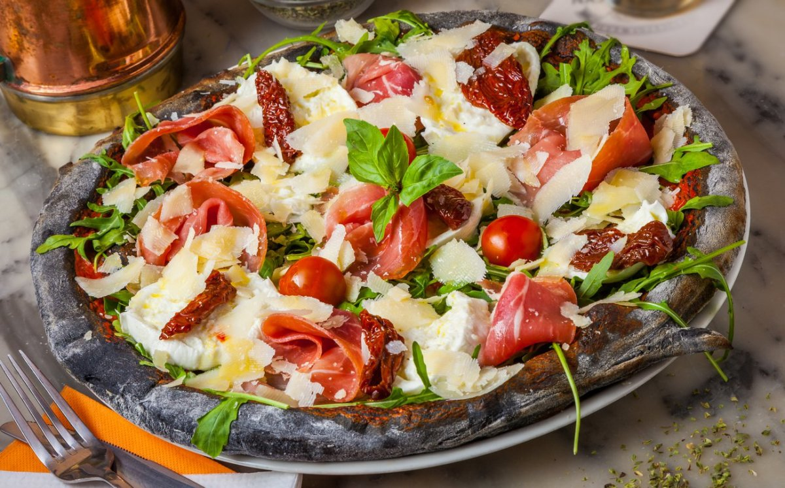
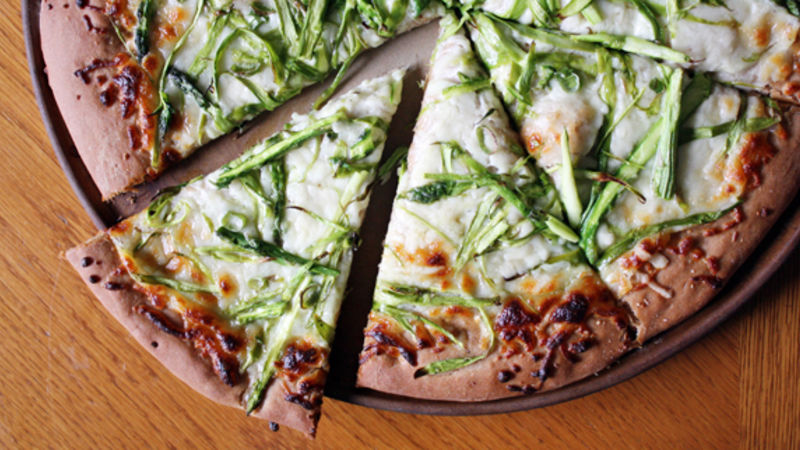
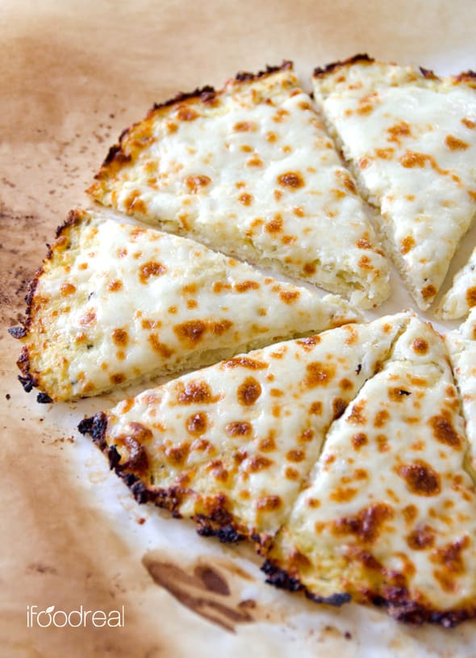
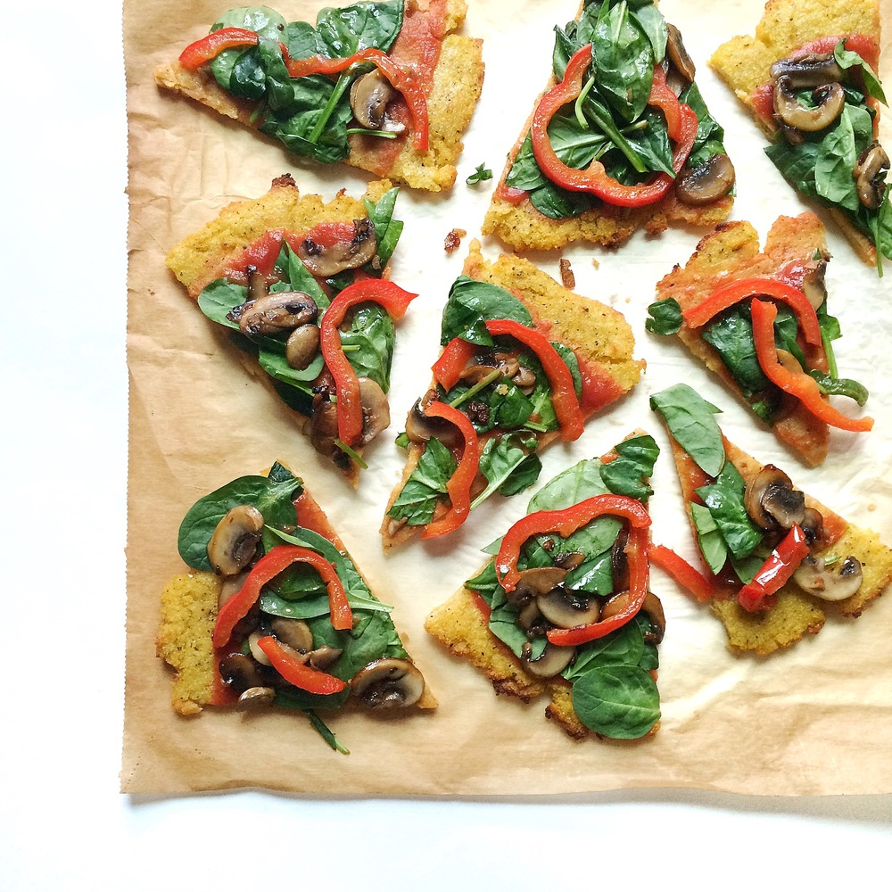
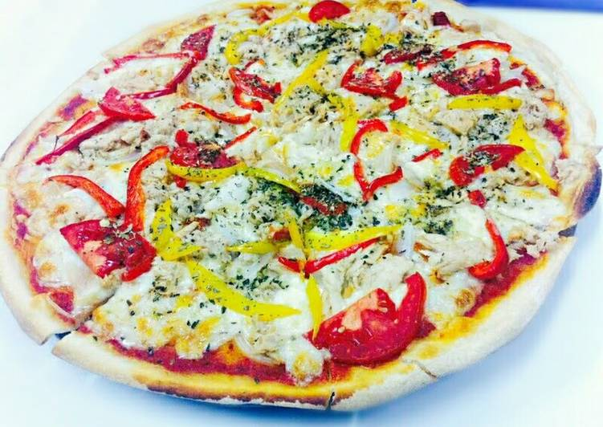
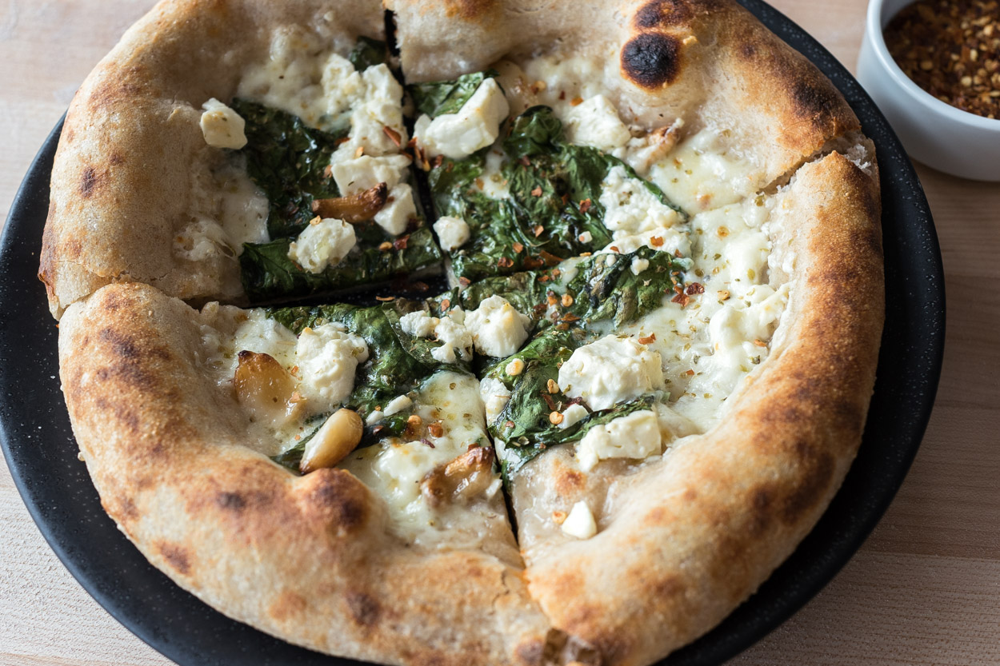

ABOUT US
We opened up our doors in October 2009, bringing authentic (and delicious!) Naples-style We have grown to include eight restaurants throught Kenya! At Little Wing we want to make the best pizza EVER! To make that happen we take our research very seriously! We have hunted high and low for the perfect blend of Italian flour to make sure the dough is just right. We then found the sweetest, ripest Italian tomatoes from the rich earth of Parma. These are picked especially for us and are the base for our secret recipe sauce. We top it all off with the tastiest, stretchiest mozzarella (no high-fat cheddar here!) and the finest, freshest, toppings, pop it into our traditional Wood Stone oven- et voilà: a little pizza heaven! It’s simple stuff, but it’s important stuff and it’s unique to Little Wing. Yummy yummy pizza (with a serious side)
Our Pizza Crusts
Flat Bread
This crust style is lighter and airier, making it ideal for less-filling appetizers and personal-sized pizzas.
Thick crust
The least thick of the thick varieties at about half an inch, the traditional pan pizza is a happy medium for most pizza lovers..
Sicilian Pizza
Crispy crust in Naples, Sicilian pizza is known for its thick, rectangle-shaped crust that is often over an inch thick
Custom Crusts
Like cheese-stuffed, toasted asiago, garlic butter, honey Sriracha, and garlic parmesan have opened the door for pizzeria operators to think beyond.
St. Louis Pizza
Its characterized by its round, thin, unleavened, cracker-like crust. Cut into squares or rectangles rather than wedges
Deep dish pizza
The crust for deep dish pizza has a ledge that allows for a generous portion of toppings, cheese, and sauce
Foccasia

Focaccia is different in that it often is not sauced. This thick, bready dough is infused with herbs and brushed with olive oil before baking